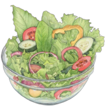
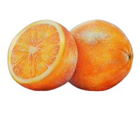
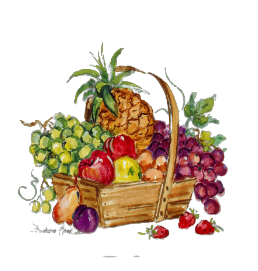
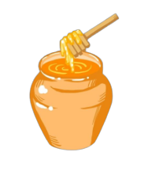

Alimentação
VAMOS FALAR SOBRE A importância da alimentação na busca por uma saúde mental equilibrada?
Atualmente, o intestino humano é reconhecido como nosso segundo cérebro, devido à capacidade de influenciar o funcionamento de diversos órgãos e tecidos corporais. Por isso, a alimentação de qualidade, aliada a hábitos de vida saudáveis, promove uma saúde mental adequada
Outro fator importante é que nossos neurônios produzem substâncias chamadas de neurotransmissores, que são responsáveis por nossos estados emotivos, Uma alimentação que pode melhorar o intestino e, consequentemente, a saúde mental tem como base alimentos in natura e minimamente processados.
As hortaliças verde-escuras (espinafre, brócolis e alface) são alimentos ricos em folato. Esta vitamina presente no complexo B está ligada à prevenção de transtornos mentais, incluindo a depressão. Além disso, na alface, há diversas substâncias nos talos das folhas, principalmente a lactucina e a lactupicrina, que atuam como calmantes naturais.
Rica em vitamina C, a laranja garante o bom funcionamento do sistema nervoso e combate à fadiga com uma boa dose de energia. A vitamina C inibe a liberação de cortisol, o conhecido hormônio do estresse.

Procure comer melancia, abacate, mamão, banana e limão. Essas frutas possuem o aminoácido triptofano, que ajuda na produção de serotonina. O consumo de três a cinco porções de frutas diariamente é o mais recomendado. Para facilitar a ingestão, você pode fazer saladas de frutas para consumir ao longo da semana.
Ajuda na produção da serotonina, responsável, como já se sabe, pelo bom humor. Duas colheres ao dia são suficientes para começar a sentir os efeitos positivos do mel. Além disso, você pode adicioná-las na sobremesa, nas frutas ou em bebidas.
Receitas
Smoothie Refrescante de banana com morangofa
Ingredientes
1xícara de leite semidesnatado,
1 banana prata bem madura
3 morangos grandes
1 colher (sopa) de iogurte natural
3 gotas de essência de baunilha
1 colher (chá) de mel
Modo de preparo
Em um liquidificador, junte todos os ingredientes. Bata até a mistura ficar homogênea. Sirva bem gelado Smoothie é uma ótima opçao refrescante e deliciosa!
Dica de preparo:
Pode congelar as frutas um dia antes se quiser
BISCOITINHOS DE BANANA E AVEIA
Ingredientes
2 bananas prata bem maduras amassadas,
1 de xícara de aveia em flocos
canela a gosto
Modo de preparo
Misture todos os ingredientes; Faça
formatos de biscoito; Polvilhe canela a
gosto por cima. Disponha em um tabuleiro
forrado com papel
manteiga. Leve ao forno pré-aquecido por
20 min ou até ficar dourado na parte
debaixo. Após pronto pode consumir
também com mel ou geleia
de sua preferência
Rendimento: 9 Biscoitos Médios
PÃO DE QUEIJO DE MANDIOQUINHA
Ingredientes
200g de polvilho azedo;
300g de polvilho doce;
150ml de azeite de oliva;
500g de mandioquinha;
1/2 de xícara de água;
sal;
opcional: chia, alecrim ou outros
Modo de preparo
Cozinhar a mandioquinha em água e fazer um purê. Com a água que sobrou da mandioquinha medir ½ xícara e aquecer novamente com o azeite até ferver. Misturar o polvilho doce, o azedo, sal e ervas em uma tigela grande. Despejar a água com o óleo ainda quente na tigela e misturar bem. Acrescentar o purê de mandioquinha e misturar com as mãos até ficar uma massa homogênea. Pré-aquecer o forno (10 minutos) a 180ºC. Untar com um pouco de óleo, colocar os pães em uma assadeira e pôr no forno por 20 a 25 minutos.